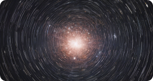
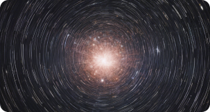

Astronomía
Los astrónomos han descubierto un nuevo tipo de estrella que pulsa como una
variable cefeida.
Por Astra Index · 40m
Ver publicación
Astronomía
Por Astra Index · 30m
Un nuevo estudio sugiere que la Vía Láctea podría ser más grande de lo que
se pensaba anteriormente
Ver publicación
Astronomía
El telescopio espacial James Webb se lanzará el 18 de diciembre de 2021.
Por Astra Index · 50m
Ver publicación
Guardados


Astra Index


Artículos
Live
Destacados
Explorar
Cargar más